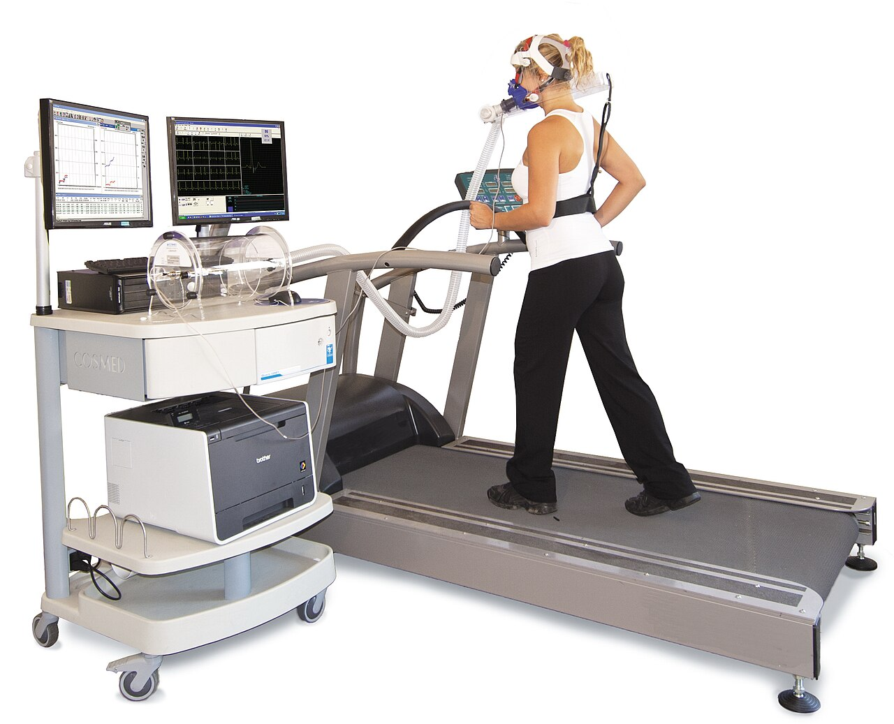

VO2 max mô tả khả năng sử dụng oxy tối đa khi gắng sức. Thể lực tim phổi có liên hệ quan trọng với sức khỏe, nhưng giá trị trên đồng hồ là ước tính theo thuật toán và điều kiện hoạt động, khác với đo trao đổi khí trong kiểm tra gắng sức.
Tình huống minh họa: VO2 max ước tính giảm sau khi đổi loại bài tập hoặc chạy dưới trời nóng. Trước khi kết luận thể lực tụt nhanh, kiểm tra điều kiện và dữ liệu đầu vào. Ngược lại, nếu leo cầu thang ngày càng khó hoặc xuất hiện khó thở mới, không chờ đồng hồ cũng báo giảm mới tìm đánh giá.
Từ phương trình Fick đến phép ước tính trên đồng hồ
Khả năng sử dụng oxy tối đa phụ thuộc hệ vận chuyển oxy và khả năng mô lấy oxy khỏi máu. Nguyên lý Fick diễn đạt quan hệ giữa tiêu thụ oxy, cung lượng tim và chênh lệch oxy động–tĩnh mạch. Nó giúp hiểu vì sao tim, tuần hoàn và cơ đều tham gia thể lực tim phổi; không có nghĩa đồng hồ đã đo riêng từng thành phần đó.

Trong kiểm tra gắng sức có đo trao đổi khí, thiết bị phân tích khí hít vào và thở ra khi công việc tăng dần. Trong đời thường, đồng hồ thường phải ước tính từ nhịp tim kết hợp tốc độ, vận động hoặc những thông tin khác mà thuật toán hỗ trợ. Tên gọi cùng là VO2 max nhưng hai quy trình không tương đương.
Thể lực tim phổi thấp có liên hệ với nguy cơ sức khỏe, nên theo dõi xu hướng có giá trị. Tuy nhiên, liên hệ ở một quần thể không trở thành lời hứa bạn sẽ sống thêm một số năm nếu điểm tăng. Sai số cảm biến, điều kiện trời nóng, dữ liệu cân nặng và loại buổi tập có thể ảnh hưởng ước tính. Khi có sự sụt khả năng vận động thực sự, triệu chứng cần được đánh giá ngay cả khi điểm chưa thay đổi.
VO2 tuyệt đối và tương đối: cùng khả năng nhưng đơn vị khác
Kết quả có thể biểu diễn bằng lít oxy mỗi phút hoặc bằng mL mỗi kg mỗi phút. Ví dụ giả định một phép đo là 3,5 L/phút và khối lượng 70 kg: 3500 / 70 = 50 mL/kg/phút. Đó là đổi đơn vị và chuẩn hóa theo khối lượng, không phải hai lần đo khác nhau.
Nếu thông tin cân nặng nhập thay đổi, giá trị tương đối có thể đổi dù lượng oxy tuyệt đối không đổi. Trong thực tế, thay đổi cân nặng và huấn luyện còn có những tác động khác, nên không dùng ví dụ này để khuyên giảm cân chỉ nhằm tăng điểm. Nó giúp đọc đúng mẫu số và hỏi liệu một thay đổi đang phản ánh thể lực, thông tin đầu vào hay cả hai. 1 2
Talk test, HRmax và HRR: ba cách không hoàn toàn giống nhau
Cường độ có thể được mô tả theo công việc bên ngoài như tốc độ, hoặc phản ứng bên trong như nhịp tim và cảm giác gắng sức. Cùng một tốc độ chạy có thể nhẹ với người này và nặng với người khác. Nhiệt, mệt và thuốc cũng có thể làm quan hệ giữa tốc độ và mạch thay đổi.
Phần trăm nhịp tim tối đa và phần trăm dự trữ nhịp tim dùng mẫu số khác nhau. Dự trữ nhịp tim là chênh lệch giữa nhịp tối đa và lúc nghỉ. Vì vậy, không lấy một phần trăm của hệ này để đọc bảng của hệ kia. Công thức dự đoán nhịp tối đa theo tuổi chỉ là ước lượng, không phải ngưỡng sinh lý được đo của riêng bạn.
Talk test cung cấp cách kiểm tra thực tế hơn khi không có đo chuyên sâu: ở mức vừa thường còn trò chuyện được, trong khi mức mạnh khiến bạn khó nói nhiều từ liền. Tuy nhiên, nó không xác nhận chính xác ngưỡng lactate hoặc “Zone 2” trong mọi mô hình ba hay năm vùng. Nên ghi rõ hệ vùng đang dùng rồi kết hợp phản ứng thực tế, thay vì biến màu trên đồng hồ thành ranh giới tuyệt đối. 3 2
Nhịp tim, thể tích nhát bóp và giới hạn suy luận
Một nhịp tim là một lần co bóp, nhưng lượng máu bơm đi còn phụ thuộc thể tích nhát bóp. Ở mức khái quát, cung lượng tim = nhịp tim × thể tích nhát bóp. Đây là lý do hai người có thể cần nhịp tim khác nhau để đáp ứng cùng một nhu cầu tuần hoàn. Tập bền có thể góp phần tạo những thích nghi tim mạch, nhưng không thể suy trực tiếp kích thước tim hay thể tích mỗi nhát bóp từ một số mạch trên cổ tay.
Nhịp tim còn thay đổi do tư thế, nhiệt, sốt, cảm xúc và thuốc. Mạch thấp ở người tập luyện không được hiểu giống mạch thấp mới xuất hiện kèm choáng. Ngược lại, một lần mạch cao sau vận động hoặc khi lo lắng không tự xác định bệnh. Phạm vi thường được nêu cho người lớn lúc thức và nghỉ không phải mục tiêu bắt buộc trong mọi giai đoạn ngủ.
Khi xem biểu đồ ban đêm, nên hỏi cách thiết bị định nghĩa “nhịp tim nghỉ”: trung bình, giá trị thấp hoặc một cửa sổ cụ thể. Một hình võng hay đường giảm dần chỉ là mô tả của đường cong; nó không cho biết chính xác lúc nào gan ngừng chuyển hóa hoặc lúc nào cơ thể hoàn tất sửa chữa.
Một phép tính minh họa, không phải cách suy tim khỏe từ đồng hồ
Nếu dùng các số giả định 70 nhịp/phút và 70 mL mỗi nhát bóp, cung lượng theo phép nhân là 70 × 70 = 4900 mL/phút. Hai thành phần có thể thay đổi, nên chỉ biết nhịp 70 chưa cho biết kết quả còn lại. Đồng hồ ghi mạch cũng không đồng thời đo thể tích nhát bóp bằng phép nhân này.
Phân biệt như vậy giúp tránh ngộ nhận “mạch càng thấp thì tim chắc chắn càng khỏe”. Mạch chịu cả nhu cầu hoạt động và điều hòa, trong khi khả năng đáp ứng tuần hoàn cần bối cảnh rộng hơn. Với triệu chứng, câu hỏi quan trọng là điều gì đang thay đổi và ảnh hưởng ra sao, không phải liệu số của bạn có thấp hơn người khác. 4 5 1
Bảng đối chiếu để đọc đúng thông tin
| Cách mô tả | Giá trị sử dụng | Không được đồng nhất với |
|---|---|---|
| Talk test | Ước lượng mức gắng sức khi hoạt động | Đo ngưỡng lactate trong lab |
| Phần trăm HRmax | Vùng theo nhịp tim tối đa | Cùng phần trăm HRR |
| Phần trăm HRR | Tính cả nền lúc nghỉ | Một ngưỡng chính xác nếu HRmax chỉ là dự đoán |
| Cảm giác gắng sức | Phản hồi thực tế của người tập | Phép đo hormone hoặc tổn thương cơ |
Ứng dụng thực tế: làm gì và đánh giá bằng cách nào?
Theo dõi xu hướng qua nhiều tuần với những hoạt động và điều kiện tương tự. Xây dựng thói quen vận động đều, tăng tải từ từ và theo dõi cả việc bạn đi nhanh hoặc lên cầu thang dễ hơn.
- Kiểm tra bạn đang xem gì. Xác định tên chỉ số, cách thiết bị lấy mẫu và điều kiện đo trước khi so sánh.
- Đặt cạnh bối cảnh. Ghi giấc ngủ, vận động, bệnh gần đây, thuốc và cảm giác; nhiều yếu tố có thể thay đổi cùng lúc.
- Chọn phản ứng phù hợp. Điều chỉnh để hỗ trợ sức khỏe hoặc sự dễ chịu, không để ép một đường cong đạt mục tiêu.
- Xem diễn biến. Mẫu nhiều lần đo hữu ích hơn một điểm đơn lẻ, nhưng triệu chứng mới hoặc nặng không cần chờ đủ số ngày mới được đánh giá.
Khi nào nên tìm hỗ trợ?
Không có một điểm VO2 max dự báo chính xác số năm sống. Thay đổi thuật toán, nhiệt độ, cân nặng nhập sai và dữ liệu nhịp tim có thể ảnh hưởng ước tính.
Khó thở mới xuất hiện hoặc khả năng vận động giảm rõ cần được khám, kể cả khi đồng hồ vẫn báo thể lực tốt.
Nguồn tham khảo và phạm vi hỗ trợ
-
Ross et al. (2016) — Importance of Assessing Cardiorespiratory Fitness in Clinical Practice — AHA scientific statement. Hỗ trợ: Thể lực tim phổi và đánh giá nguy cơ sức khỏe.
-
WHO — Physical activity — Public health guideline summary. Hỗ trợ: Khuyến nghị vận động theo nhóm đối tượng.
-
CDC — Measuring Physical Activity Intensity — Public health guidance. Hỗ trợ: Talk test phân biệt vận động vừa và mạnh.
-
American Heart Association — All About Heart Rate — Professional patient guidance. Hỗ trợ: Nhịp tim nghỉ, yếu tố ảnh hưởng và triệu chứng cần khám.
-
Kellmann et al. (2018) — Recovery and Performance in Sport: Consensus Statement — Consensus statement. Hỗ trợ: Phục hồi cần cá nhân hóa, gồm tải tập và áp lực cuộc sống.
Cập nhật nội dung và nguồn: 26/10/2026. Nội dung giáo dục; chưa có xác nhận duyệt bởi bác sĩ.